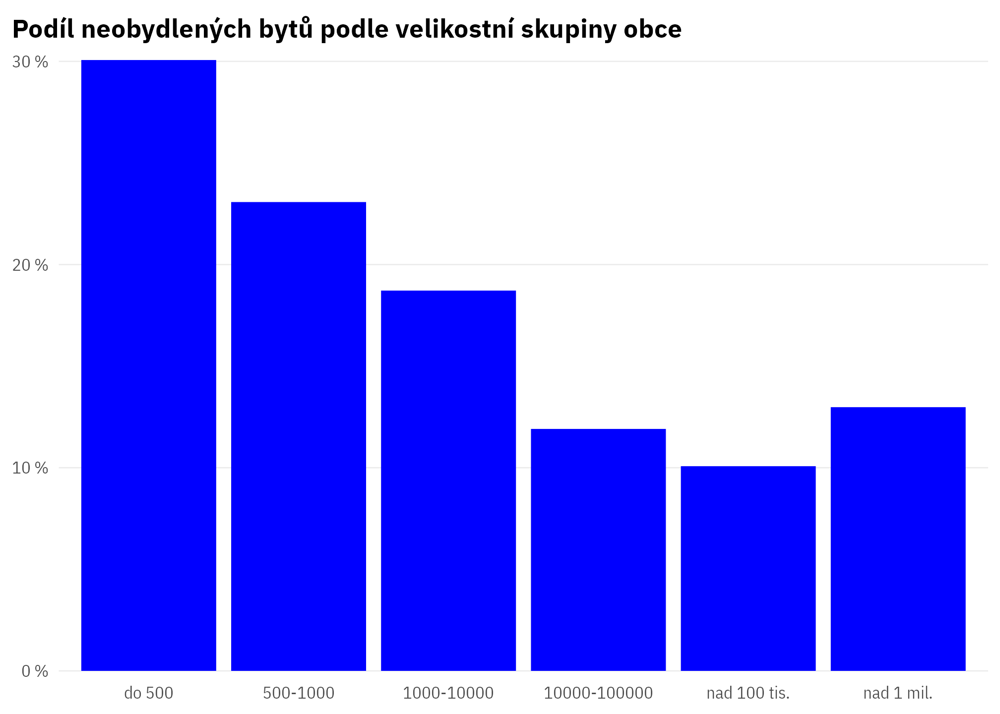
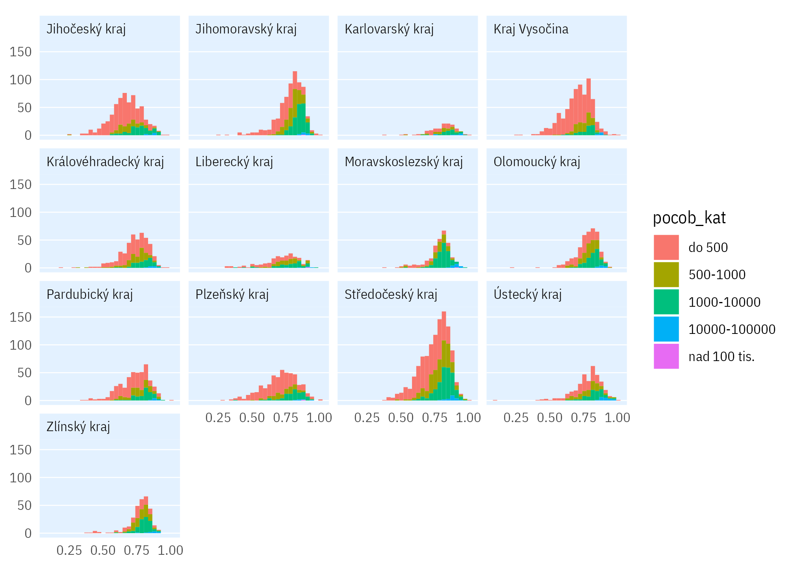
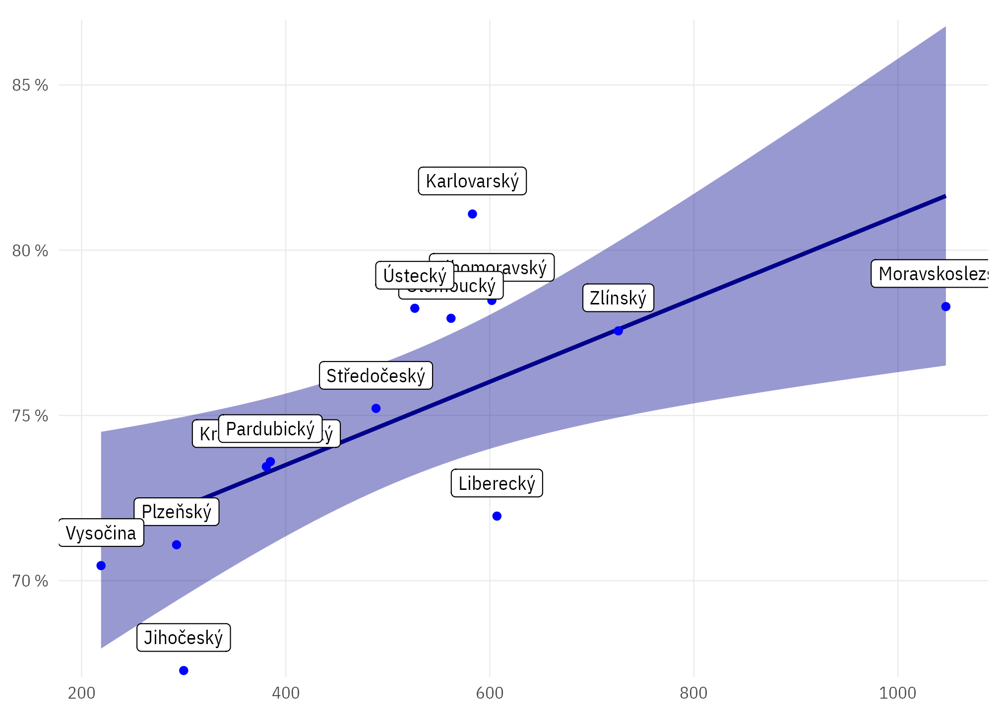
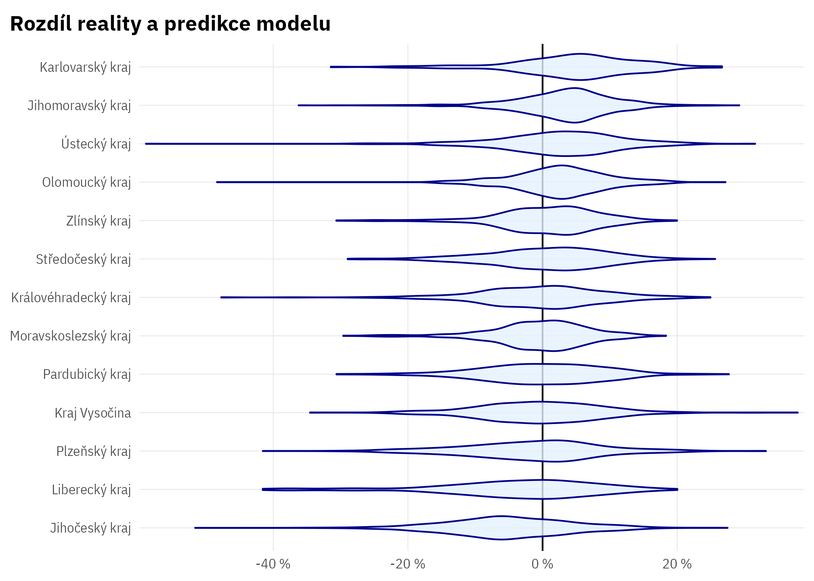

Neobydlené byty: vstupní analýza
Toto je pouze ukázka, jak lze podobnou analýzu udělat tak, že kód je reprodukovatelný a generuje přímo grafy a čísla do textu.
Využíváme data ČSÚ ze SLDB o obydlenosti bytů v obcích.
Základní náhled

Mediánový podíl obydlených bytů je 76 %. (Toto číslo se do věty doplňuje automaticky z živých dat)

Zde je deset obcí s nejvyšší obydleností bytů:
| uzemi_txt | obvykle obydlen | obvykle neobydlen | obydlenost_share | kraj_nazev | pocob |
|---|---|---|---|---|---|
| Hněvnice | 49 | 0 | 1.0000000 | Plzeňský kraj | 114 |
| Dobříč | 234 | 0 | 1.0000000 | Středočeský kraj | 499 |
| Zhoř | 63 | 0 | 1.0000000 | Plzeňský kraj | 165 |
| Vřesová | 106 | 0 | 1.0000000 | Karlovarský kraj | 409 |
| Všehrdy | 67 | 0 | 1.0000000 | Ústecký kraj | 156 |
| Odrovice | 97 | 0 | 1.0000000 | Jihomoravský kraj | 247 |
| Zlátenka | 19 | 0 | 1.0000000 | Kraj Vysočina | 45 |
| Uhersko | 143 | 1 | 0.9930556 | Pardubický kraj | 292 |
| Droužkovice | 337 | 4 | 0.9882698 | Ústecký kraj | 821 |
| Modletice | 256 | 4 | 0.9846154 | Středočeský kraj | 528 |
Podle krajů

Podle krajů a velikosti obce

Jak je obydlenost bytů v obcích rozložena v krajích?

Koreluje průměrná velikost obce v kraji a celková obydlenost bytů v kraji?

Vliv kraje vs. velikosti obce
Abychom odhadli samostatný “vliv” kraje na obydlenost bytů v obci, odhadneme lineární model vztahu mezi velikostí obce a obydleností.
Call:
lm(formula = obydlenost_share ~ pocob_log, data = byty_podily0)
Residuals:
Min 1Q Median 3Q Max
-0.58920 -0.05371 0.00893 0.06005 0.37909
Coefficients:
Estimate Std. Error t value Pr(>|t|)
(Intercept) 0.4268069 0.0062190 68.63 <0.0000000000000002 ***
pocob_log 0.0509893 0.0009846 51.79 <0.0000000000000002 ***
---
Signif. codes: 0 '***' 0.001 '**' 0.01 '*' 0.05 '.' 0.1 ' ' 1
Residual standard error: 0.09353 on 6251 degrees of freedom
Multiple R-squared: 0.3002, Adjusted R-squared: 0.3001
F-statistic: 2682 on 1 and 6251 DF, p-value: < 0.00000000000000022Model zachycuje cca 30 % variability obydlenosti bytů v obcích.
Graf níže ukazuje, jak se obydlenost bytů v obcích v jednotlivých krajích liší od očekávání, tj. od toho, jaká by měla být s ohledem na velikostní složení obcí.

V některých krajích je tedy systematicky nižší obydlenost bytů, než by odpovídalo velikostnímu složení obcí v daném kraji.